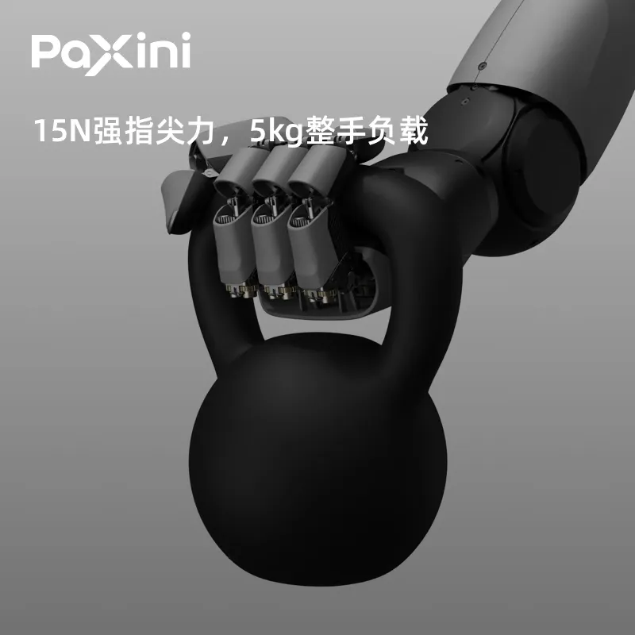

AgiBot's Innovation Day 2026: 20,000 Robots and a New "Worken" Metric
The leading humanoid maker's own collection-and-deployment playbook, including MEgo Glove and open datasets.
Robots don't learn from the internet the way chatbots do — someone has to physically move them, record the motion, and sell the result. China has turned that into an industry: more than 100 data collection centers by mid-2026, market rates of ¥500–1,000 per hour for gold-standard teleoperated data, a ~90% data gap analysts say stands between today's models and a mature embodied brain — and a heated argument over whether part of the industry's revenue is real.

Large language models got lucky: centuries of text and billions of web pages gave them roughly 300 trillion tokens of ready-made training material. Robots cannot use any of it. A robot needs multimodal interaction data — task instructions, environmental observations, joint states, force and touch feedback, and execution results — recorded in sequence, in the physical world, through the machine's own body. That data was never systematically captured before, and it cannot be scraped.
The shortfall is enormous. Guojin Securities estimates a mature embodied foundation model needs tens of millions of hours of quality data (and up to hundreds of millions for general intelligence), while the industry currently has only "hundreds of thousands to one million hours" — a supply gap of about 90%. A CAICT-linked estimate puts it even more concretely: to train 1.1 trillion tokens entirely from real-robot collection would require about 21,200 robots working for a full year to produce million-hour-class effective data. Zheshang Securities calculates that as of early 2026, globally available compliant real physical-interaction data is 20× short of what one general embodied model needs. And the payoff is measurable: overseas research cited by CAICT found that roughly doubling pretraining data scale lifted task success rates by about 1.5×.
The 2026 Embodied Data Development Report (China Information Industry Association, CESI Institute 5, Data Element Society) maps the industry's four main collection routes:
| Path | How it works | Market economics | Weakness |
|---|---|---|---|
| Teleoperated real robot ("gold standard") | Operator drives a real robot via master arm, VR/AR or motion capture; vision, joints and force recorded synchronously | ¥500–1,000/hour; falls to ~¥275/hour of effective data at scale; rig >¥200k per set, robot ¥600–700k; operators produce only 2–3 effective hours/day | Heavy, expensive, ~67% of arm-limit cycle time, no 24/7 output |
| Simulation / synthetic | Programmatic generation in physics engines with randomization, demo amplification, digital twins | ~1/100 the cost of real-robot data; highest capacity ceiling, lowest marginal cost | Sim-to-real gap: 89.4% sim success vs ~12% real-home generalization; leading stacks hold fit error under 5% |
| No-robot / portable collection | Humans hold or wear portable devices; trajectories mapped into robot action space | ¥100–200/hour; ~10× cheaper than teleop; core kit at ~¥10k | Hard post-processing: SLAM recovery, drift correction, IK re-targeting; hand precision loss |
| Internet video extraction | Convert heterogeneous data into unified formats (RLDSE) and action spaces | Cheapest; Open X-Embodiment aggregates 60 sub-datasets, 22 robot embodiments | Modal compression (often one RGB camera); weakest cross-embodiment reuse; 3–5× processing cost |
Source: Embodied Data Development Report 2026 via The Paper (澎湃新闻); CAICT Embodied Intelligence Training Grounds Research Report (2026) via Jiemian. Per-hour figures are market quotes for commissioned collection.
Industry analysts frame the structural problem as "three absences": no unified operating system ("pre-OS era"), non-standardized hardware and software (one embodiment, one dataset; cross-embodiment adaptation costs 3–5×), and unconverged technical routes (VLA vs world models vs VLM+control), producing data that is "non-standard, expensive, hard to reuse."
By June 2026 China had 70+ operating training grounds with 46 more built or planned across 18 provincial regions (CAICT); by August, media tallies counted 106 built and 84 operating. Three clusters lead: the Yangtze Delta (Zhejiang alone has 14), Beijing-Tianjin-Hebei and the Pearl River Delta. The Yangtze Delta cluster — Shanghai's Qilin training ground, Zhiyuan's data factory, Galaxea's Suzhou center, Hangzhou's humanoid pilot base and Hefei's pre-training ground — covers over 70,000 m².
Policy has been pushing alongside capital: eight ministries' "AI + Manufacturing" action plan calls for humanoid pilot bases and training grounds, MIIT and SASAC run a "real-scenario training" initiative, and the National Data Administration convened a work session on October 28 stressing "need-driven supply." China has issued 40+ local policy documents on training grounds between 2024 and June 2026, and the National Data Group was formally established on October 20.
| Model | How money is made | Reference market pricing |
|---|---|---|
| Custom collection services | Build scenes and operators to a client's model, embodiment and task spec; charge per valid entry, per hour, per robot hour or per project | Teleop real-robot data ¥500–1,000/hour; other real-robot data ¥200–500/hour; complex tasks priced per scenario |
| Standard dataset licensing | Produce once, license many; buyout, annual subscription or per-scenario | General/vertical datasets ¥10k–500k per set; industry-exclusive ¥500k–5M; subscriptions ¥50k–500k/year |
| Simulation & synthetic data | Platform license + scenario customization + per-volume compute + real-robot validation | Sim platforms ¥100k–1M/year; scenes ¥10k–200k each; synthetic ¥0.01–1/frame or ¥0.5–20/entry |
| Annotation & processing | Labor-intensive per-frame/per-trajectory charging | 2D boxes ¥0.05–0.5; segmentation ¥0.5–5/frame; 3D point clouds ¥1–20/frame; trajectories ¥5–100/entry; QA +10–30% |
| Hardware + SaaS subscription | Sell/lease rigs, gloves, workstations; SaaS fees and maintenance | Adapted kits ¥20k–200k; gloves ¥5k–50k; workstations ¥100k–500k; SaaS ¥10k–200k/year |
| Scene operation & data flywheel | Run robots in real factories/warehouses/retail; collect data while serving | RaaS ¥thousands–tens of thousands per robot/month; revenue/data-sharing 5–30% |
| Data evaluation & certification | Third-party quality, standard-compliance and training-fitness checks | Still mostly internal; no public market prices yet |
Source: Embodied Data Development Report 2026 via The Paper. Custom collection remains the main revenue model; most suppliers sell one-off projects rather than reusable products.
Who sells? The report divides the field into data suppliers (Paxini, Lightwheel AI 光轮智能, Luming 鹿明, Lingchu 灵初, Mifei, Noyiterobot), platform traders (JD Cloud's embodied-data trading platform, Baidu Smart Cloud's "data supermarket" — commission models still unformed) and public-service operators (Shijingshan Beijing training center, the national innovation center). On the demand side, leading robot makers mostly self-collect; free open datasets dampen paid demand from model companies; and downstream scene customers are still at trial stage, unsure how to open business data or verify ROI. On the funding side, embodied-data pure-plays are drawing capital — Jianzhi Robot (简智机器人, Gen DAS rigs / Gen Matrix governance / Gen ADP production line) announced a $100M Series A+ on November 2, 2026.
The fastest-growing model has also become the most contested. A typical arrangement: a local state-owned platform funds and builds a data center, buys robot hardware from a company, and the company then buys the data back — for its own model training or resale. On September 9, Mech-Mind founder Shao Tianlan publicly criticized "well-known, highly valued" embodied-AI companies for using such centers plus related-party deals with local governments, investors and suppliers to manufacture revenue ahead of IPOs.
Industry responses show a spectrum:
Using Shao's L0–L10 robot-readiness ladder, Jin Ge argues long-term-value revenue sits at L8–L10 (real terminal business), while much of today's industry is at L0–L3 demo stage — "the market is pricing mature-stage valuations on pre-L3 reality." Multiple insiders told Securities Daily-affiliated media that centers won't disappear — post-training still needs real-robot data — but they are receding from "protagonist of the valuation story" to "stepping stone of an early industry."
Analysts expect the collection segment to keep compounding even as revenue scrutiny tightens. Zheshang Securities models the midstream data-collection market reaching ¥174.1B by 2030 (2026–30 CAGR ~203%), with upstream hardware at ¥15.3B; Guojin Securities argues collection equipment and services are the industry's clearest, most cash-stable business, and recommends suppliers with orders/capacity plus firms that platformize processing and extend into evaluation, post-training and deployment. For reference, the global benchmark Scale AI is valued at $29B.
China's answer to the data famine is still being built — and argued over. The OECD of this market, if one emerges, will be whoever can make the data flywheel real: robots in real scenes, data back into models, better robots into more scenes. National Data Administration adviser Ouyang Rihui predicts the industry will converge on high-quality interaction data from small samples, a virtual-real hybrid paradigm, and business models bound to scenes that recycle data continuously. For now, the "data infrastructure war" is quiet, provincial, and very large — and it will shape how fast Chinese robots actually learn to work.
A facility where operators teleoperate robots (via gamepads, VR or master arms) through mock homes, shops, factories or labs, recording vision, joint angles and force feedback frame by frame to train embodied models. China had 70+ operating centers by June 2026 and 106 built by August.
Teleoperated real-robot data: ¥500–1,000/hour, dropping to ~¥275/hour of effective data at scale; portable/no-robot collection ¥100–200/hour; synthetic data ~1/100 the cost of real data. Standard dataset licenses run ¥10k–500k per set, industry-exclusive up to ¥5M.
The national Guodi network (10 grounds, Shanghai Qilin anchor), Zhiyuan/AgiBot (9), UBTECH and Paxini and Leju (5 each), Luming (3), and 12 companies with one each including JD, Realman, Galaxea, Xinghai, Lens and Zoomlion.
State platforms do fund centers and buy hardware, and some companies repurchase data — critics call part of this manufactured revenue; defenders say it is legitimate if data is genuinely used and externally valued. Investors now scrub utilization, payments and related-party relationships, and may exclude such revenue from valuations.
Robots need physical multimodal interaction data that was never systematically recorded; analysts estimate a 90% gap versus mature-model needs, with one CAICT-linked estimate of 21,200 robot-years for 1.1 trillion tokens.
Disclaimer: This article is independent editorial analysis based on CAICT's training-grounds report, the Embodied Data Development Report 2026, Zheshang/Guojin research notes and Chinese press coverage (Securities Daily / 科创板日报, The Paper, Jiemian, Xinhua, 36Kr). Market-size forecasts are broker estimates, not guarantees. Nothing here is investment advice.
The leading humanoid maker's own collection-and-deployment playbook, including MEgo Glove and open datasets.
How public markets are pricing the embodied-AI buildout.
The hardware that the data flies back into.
Where the money went as funding cooled in H2 2026.
We are tracking the data, the models and the money behind Chinese robotics.